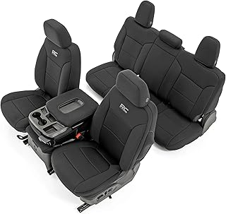
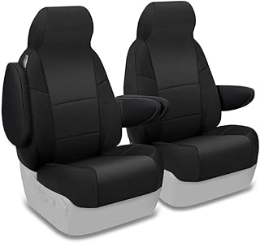
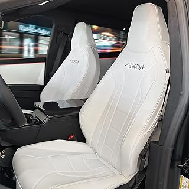

← cybertruckseats.com
Cybertruckseats: What We'd Buy With Our Own Money
May 2026
There's a reason cybertruckseats is trending right now. People want quality without overpaying, and 2026 delivers solid options at every price point.
Advice From Experience
- Set a firm budget before browsing. It's easy to creep up $50-100 comparing cybertruckseats features.
- The Q&A section on cybertruckseats listings often answers questions that no review covers.
- Between two options? Go with the one that has more reviews. Volume of feedback matters for cybertruckseats.




What We'd Actually Buy
⭐ 4.2 · $199.99
⭐ 4.5 · $199.99
⭐ 4.0 · $209.99
⭐ 4.4 · $239.95
Lessons from Real Buyers
Going with the cheapest option — Budget cybertruckseats cut corners. Spending 20% more often gets something that lasts 3x longer.
Not measuring — "It looked bigger online" is the #1 return reason for cybertruckseats. Measure twice.
Overbuying features — Most people use 20% of high-end cybertruckseats features. Don't pay for what you'll never touch.
Panic buying on sale days — Prime Day and Black Friday cybertruckseats deals aren't always real discounts. Check year-round pricing.
Last Word
2026 has brought quality cybertruckseats options at every price point. See our complete guide for current recommendations.
Affiliate Disclosure: As an Amazon Associate, we earn from qualifying purchases. This doesn't affect our recommendations.
 Rough Country Neoprene Seat Covers Cybertruck — Fan favorite
Rough Country Neoprene Seat Covers Cybertruck — Fan favorite CalTrend Cybertruck Seat Covers — Consistently rated
CalTrend Cybertruck Seat Covers — Consistently rated #1 — MAXDOM Underseat Storage Fit for 2024-2025 Tesla Cybertruck Rear Seat Organ — Consistently rated
#1 — MAXDOM Underseat Storage Fit for 2024-2025 Tesla Cybertruck Rear Seat Organ — Consistently rated